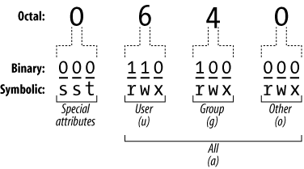

December 4, 2020 - 2 minute read
Days 13 & 14 : Users, Groups and Permissions
This is part of the #LinuxUpSkillChallenge. Don't forget to also check out the Official Instructions for days 13 and 14. Also check the Reddit posts.
1. Groups
Options to check the available groups:
cat /etc/group - see all users
grep GID /etc/login.defs - to check the min/max GID for normal and system users
getent group {1000..6000} - to retrieve only the normal groups
- Create a new group:
sudo groupadd groupname - Delete an existing group:
sudo groupdel groupname - Change the group name:
sudo groupmod -n new_group_name old_group_name - Change file’s group ownership:
sudo chgrp groupname file/folder
2. Users
Options to check the available users:
cat /etc/passwd - see all usernames, names of users, home directories
grep UID /etc/login.defs - to check the min/max UID for normal and system users
getent passwd {1000..6000} - to retrieve only the normal users
groups username - to see the list of groups the user is assigned to
- Create User:
sudo adduser username - Create a new user belonging to the specified group:
sudo adduser --ingroup group username - Change user password:
sudo passwd username - Delete user:
sudo userdel username - Change user’s name:
sudo usermod -l newname user - Change user’s primary group:
sudo usermod -g newgroup user - Add user to secondary groups:
sudo usermod -aG group1,group2 user - Change file’s user ownership:
sudo chown -R username file/folder
3. Sudo and sudoers
The sudoers file is a file used to allocate system rights to system users. This allows the administrator to control who does what. When you want to run a command that requires root rights, Linux checks your username against the sudoers file.
To edit the sudoers file in a safe fashion, visudo is recommended. Visudo locks the sudoers file against multiple simultaneous edits, provides basic sanity checks, and checks for parse errors before installing the edited file.
- Permissions
Each file and directory has three user based permission groups:
- user : apply only the owner of the file or directory, they will not impact the actions of other users.
- group : apply only to the group that has been assigned to the file or directory, they will not affect the actions of other users.
- others : apply to all other users on the system.
Each file or directory has three basic permission types:
- read : capability to read the contents of the file.
- write : capability to write or modify a file or directory.
- execute : capability to execute a file or view the contents of a directory.

Octal notation is a numerical system for modifying permissions. Each octal permission can be represented by 3 or 4 numbers; where each of these numbers is an “octal”, meaning they range from 0-7. They basically combine the following:
- 7 = read(4) + write(2) + execute(1)
- 6 = read(4) + write(2)
- 5 = read(4) + execute(1)
- 4 = read(4)
- 3 = write(2) + execute(1)
- 2 = write
- 1 = execute

umask is used to control the default file permission for new files. It uses a four-digit octal number but can also be expressed using symbolic values.
chmod
- Change permissions of a file or folder (octal):
sudo chmod 777 folder/file - Change permissions of a file or folder (symbolic):
sudo chmod +x folder/file
More about files and permissions, check out this Eli the Computer Guy video.
For more detail on how I did each day, check out my log on Reddit. Follow me on Twitter for daily updates.